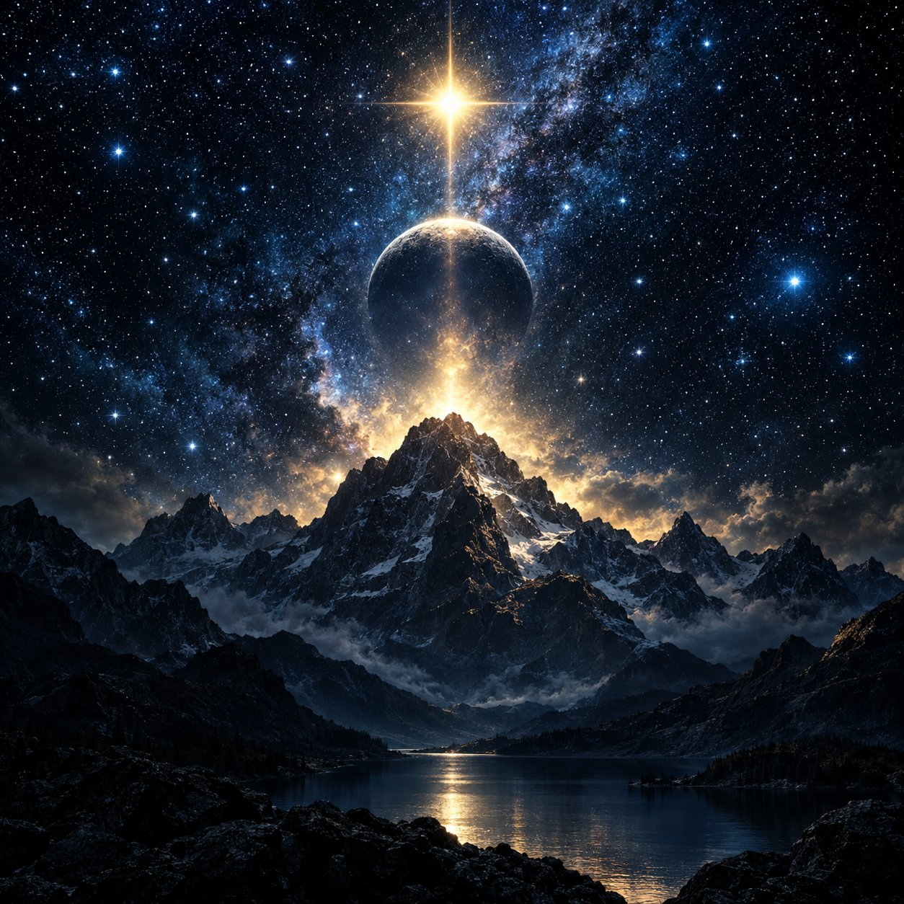

Stars of Heaven
Debutalbum · 1988Bandets första album, inspelat på bara tre veckor i en källarstudio i Göteborg.
- Night Sky Calling
- Rise Again
- Hearts of Fire
- Stand Tall
Tre fullängdsalbum som definierade Stars of Heavens resa genom hårdrocken.

Bandets första album, inspelat på bara tre veckor i en källarstudio i Göteborg.
Ett tyngre och mer produktionsmässigt album som tog bandet till en större publik.
Bandets mest mogna verk, med längre låtar och mer melodiska arrangemang.
| Plats | Låt | Album | År | Längd |
|---|---|---|---|---|
| 1 | Night Sky Calling | Stars of Heaven | 1988 | 4:32 |
| 2 | Heaven's Gate | Burning Strings | 1991 | 5:10 |
| 3 | Falling Stars | Wings of Light | 1994 | 4:48 |
| 4 | Thunder Road | Burning Strings | 1991 | 3:59 |
| 5 | Angel's Cry | Wings of Light | 1994 | 6:02 |